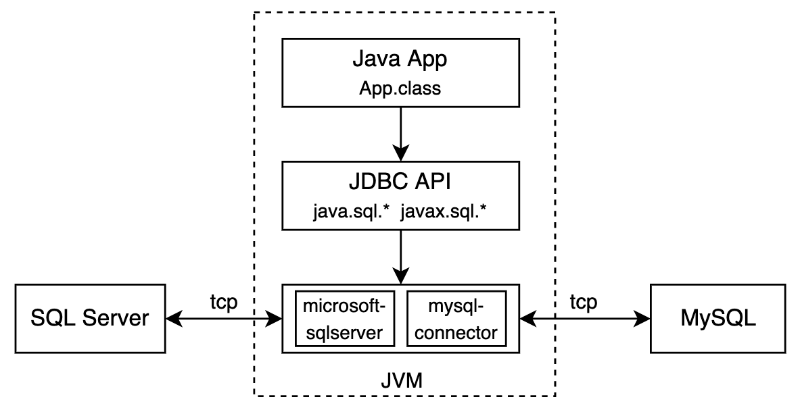
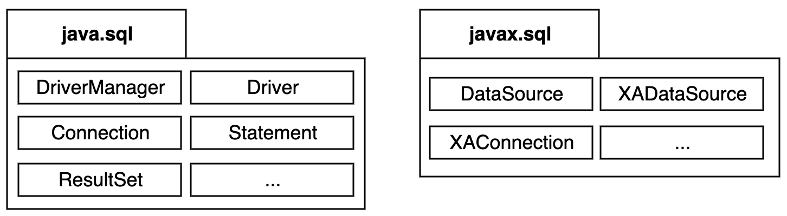
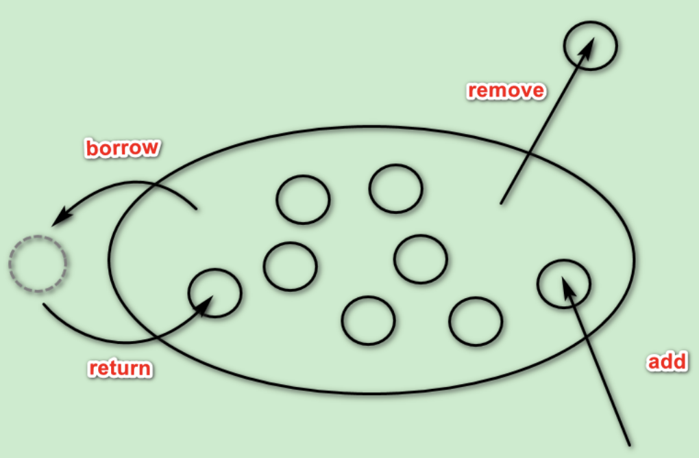
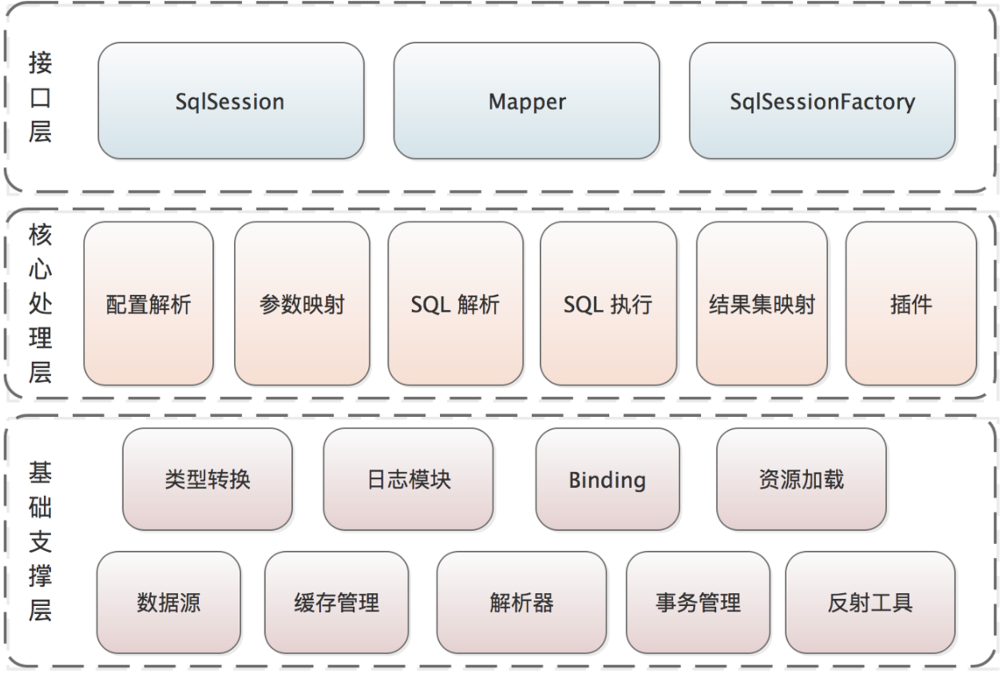
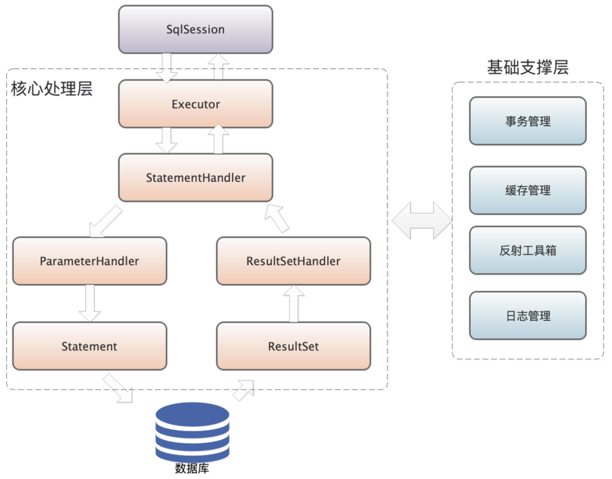
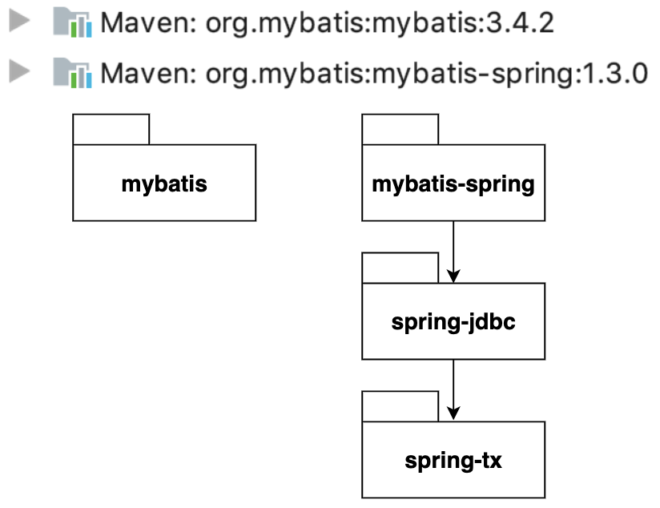
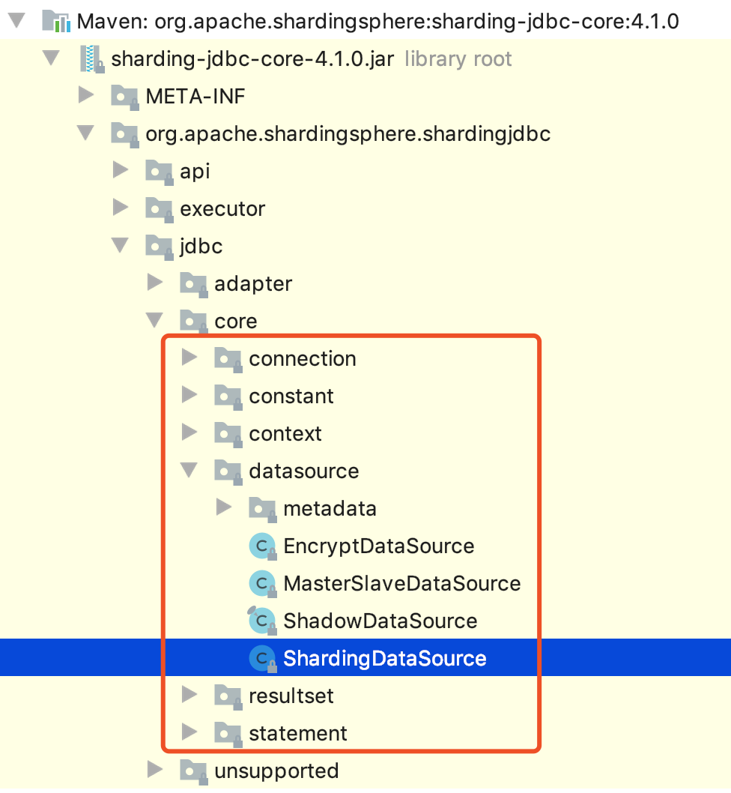
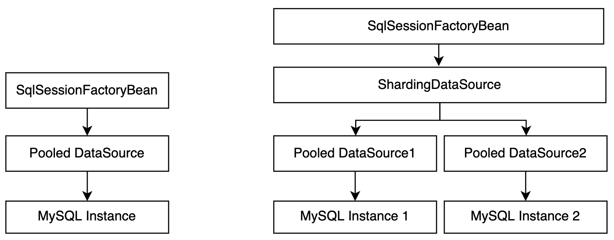
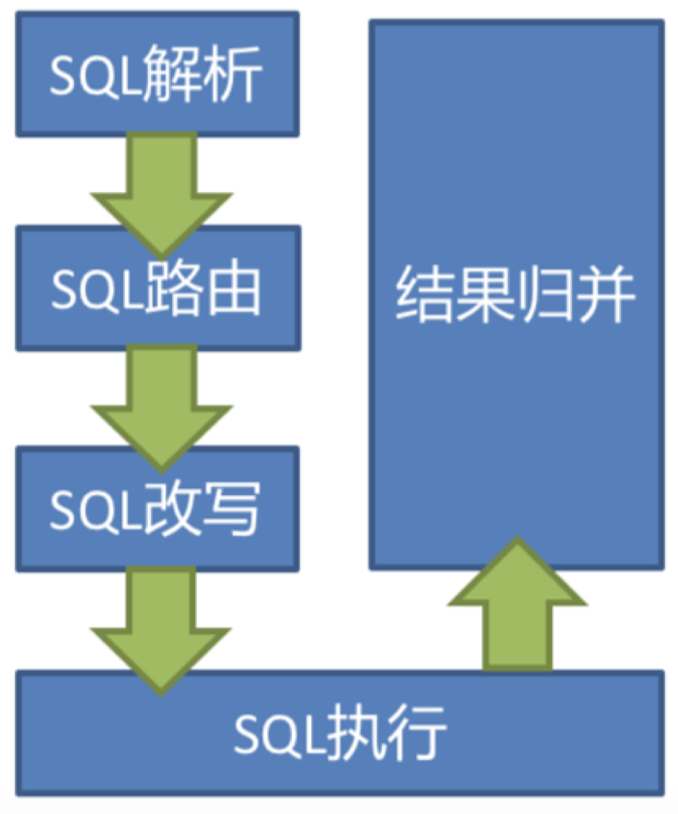

JDBC API及其上层生态
JDBC API是JDK提供的, Java程序访问数据库的统一接口. 我们实际开发中使用的数据库连接池、ORM/持久层框架、分库分表等也无一例外是基于JDBC API的上层拓展与实现. 本文我们从底层出发, 逐个了解上层的封装细节.
JDBC API基本介绍
Oracle官方定义:
The Java Database Connectivity (JDBC) API provides universal data access from the Java programming language. Using the JDBC API, you can access virtually any data source, from relational databases to spreadsheets and flat files.
简单来说, JDBC是JDK提供的Java程序访问数据库资源的上层统一接口. 当Java程序要访问数据库时，Java代码可直接调用 JDBC接口，而JDBC接口底层通过Java SPI机制找到数据库厂商的JDBC驱动来实现对数据库的读写操作。
JDBC API基础使用方法:
JDBC API包含两个包: java.sql 和 javax.sql , 其核心类和基本用法如下:
- 通过DriverManager.getConnection()获取数据库驱动连接
1 | public class DriverManager { |
- 查询数据
1 | String JDBC_URL = "jdbc:mysql://localhost:3306/test"; |
- 插入、更新、删除数据
1 | // insert and get genrated key |
- 事务操作, 默认每条sql语句都会在一个独立的事务中并被自动提交, 控制事务就是取消自动提交、执行多条sql并手动提交
1 | Connection conn = openConnection(); |
DataSource接口:
官方javadoc:
A factory for connections to the physical data source that this DataSource object represents. An alternative to the DriverManager facility, a DataSource object is the preferred means of getting a connection. (总结)

DataSource一般有三种实现:
- Basic 实现: 内部就是调用DriverManager中的数据库驱动获取连接. 例如Spring JDBC的DriverManagerDataSource.
- Connection pooling实现: 用池化技术复用连接. 例如Hikari的HikariDataSource.
- Distributed 实现: 可以产出能执行分布式SQL的Connection. 例如Sharding JDBC的ShardingDataSource.
生态一: 数据库连接池
每次读写访问都通过数据库驱动新建和销毁tcp连接的开销是昂贵的, 我们通常用连接池来初始化并复用已经创建好的连接. 连接池的开源实现非常多, 比如hikari, druid, tomcat-jdbc pool等. 不同实现模型和细节各有不同, 其优势也各有不同, 我们这里不一一展开了, 大家可以自行查看其benchmark相关文章.
连接池的大体模型都如上图所示: 数据库驱动连接的借用、归还、以及创建和销毁. 我们这里列出一些较通用的连接池配置点, 在实际使用过程中大家注意根据实际需要正确的配置即可. 下边示例是hikari的参数配置项.
1 | connectionTimeout: 请求连接的超时时间 |
此类数据库连接池通常也会产出详细的监控指标信息, 收集这类指标可以很好的辅助我们排障和了解线上资源使用情况, 常见指标(hikari为例)如下:
1 | idleConnections: 当前闲置连接数 |
生态二: spring-jdbc
spring-jdbc是Spring framework中的模块之一, 提供了Spring对原生JDBC API的实现和上层封装,其主要包含以下四个包:
- core: 提供Spring封装后的核心功能接口及实现, 如 JdbcOperations, JdbcTemplate, NamedParameterJdbcTemplate
- datasource: 提供DataSource的实现及上层功能封装, 如 DriverManagerDataSource和 DataSourceTransactionManager
- object: 提供面向对象的SQL Query和Result返回结果封装
- support: 提供上面包的一些通用support类
spring-jdbc (包括其依赖的spring-tx) 可以帮我们简化一些开发流程:
- 原始: 获取数据库连接、处理事务autocommit、声明SQL、预编译并执行、映射ResultSet结果集到期望对象、处理异常和事务、释放连接资源等一系列操作.
- spring-jdbc: 配置DataSource和JdbcTemplate, 声明SQL和结果映射方式、调用JdbcTemplate接口执行, 获取对象结果.
简单使用示例如下:
- 配置DataSource和JdbcTemplate
1 |
|
- 使用JdbcTemplate最为Dao层返回结果
1 | public List<User> getUsers(int pageIndex, int pageSize) { |
JdbcTemplate只是jdbc api的一些简单封装, 在实际开发中, 大多还是使用MyBatis、Hibernate此类的ORM框架, 更好的对底层操作进行封闭.
但spring-jdbc依赖的spring-tx包中对事务进行了抽象, 给我们提供了简单的 @Transactional 注解来为代码逻辑进行AOP事务增强. 其中增强逻辑的实现全部依靠 DataSourceTransactionManager 类来完成, 包括当前事务上下文判断、从DataSource中获取Connection、设置隔离级别并关闭auto commit、设置线程共享的ThreadLocal存储dataSource获取到的Connection、以及最终的Connection commit or rollback.
理解事务本质 以及 Spring对事务的封装:
从原生JDBC API我们知道, 一个事务和一个Connection是强绑定的. 默认一个Connection的autoCommit会设置成true, 也就是每条执行的SQL默认都在一个事务里,并在执行完成后自动提交了. 若我们想让代码实现多个SQL在一个事务里执行, 本质上就是让这些SQL在一个autoCommit设置为false的Connection中执行, 并最终手动commit. DataSourceTransactionManager本质上也就是做了这个工作, 在@Transactional 注解的方法开始前, 获取到新的Connection, 设置隔离级别与autoCommit, 执行若干代码逻辑, 最终提交或回滚. 当遇到传播级别为REQUIRES_NEW的增强方法或想另起一个新事务执行一些SQL时, 就需再从DataSource获取一个新的Connection来进行.
1 | protected Object invokeWithinTransaction(Method method, Class<?> targetClass, final InvocationCallback invocation) |
生态三: ORM/持久层框架-MyBatis
本节我们挑重点讲解, 详细源码分析可参考此文章: mybatis design concept
MyBatis官方Introduction:
MyBatis 是一款优秀的持久层框架，它支持自定义 SQL、存储过程以及高级映射。MyBatis 免除了几乎所有的 JDBC 代码以及设置参数和获取结果集的工作。MyBatis 可以通过简单的 XML 或注解来配置和映射原始类型、Map、集合等接口和 Java POJO为数据库中的记录。
MyBatis 分为三层架构，分别是基础支撑层、核心处理层和接口层，如下图所示：
- 基础支撑层是整个 MyBatis 框架的地基，为整个 MyBatis 框架提供了底层基础的功能，其中每个模块都提供了一个内聚的、单一的能力;
- 核心处理层是 MyBatis 核心实现所在，其中涉及 MyBatis 的初始化以及执行一条 SQL 语句的全流程。
- 接口层是 MyBatis 暴露给调用的接口集合，这些接口都是使用 MyBatis 时最常用的一些接口，例如，SqlSession 接口、SqlSessionFactory 接口等。
MyBatis执行过程以及对JDBC API的封装:
MyBatis与Spring的集成:
我们在Spring框架内使用mybatis的时候, 要引入mybatis和mybatis-spring两个依赖, 前者是mybatis的所有核心逻辑的代码, 而后者负责整合spring框架能力, 其又引入了spring-jdbc以及spring-tx.
一个 Transaction 的例子, 多个Dao在一个事务中执行的过程:
1 |
|
MyBatis框架的SQL执行是交给Executor负责的, Executor每次新建的时候会传入一个Transaction对象, 在与Spring整合的过程中, 会将MyBatis Configuration中的 TransactionFactory指定为 SpringManagedTransactionFactory, 其最终目标呢, 就是创建出 SpringManagedTransaction给 Executor使用.
SpringManagedTransaction有什么特别的呢?
1 | // SpringManagedTransaction 中的获取连接 |
生态四: 分库分表
Sharding-JDBC (ShardingSphere-JDBC)
官方介绍:
定位为轻量级 Java 框架，在 Java 的 JDBC 层提供的额外服务。 它使用客户端直连数据库，以 jar 包形式提供服务，无需额外部署和依赖，可理解为增强版的 JDBC 驱动，完全兼容 JDBC 和各种 ORM 框架。
- 适用于任何基于 JDBC 的 ORM 框架，如：JPA, Hibernate, Mybatis, Spring JDBC Template 或直接使用 JDBC；
- 支持任何第三方的数据库连接池，如：DBCP, C3P0, BoneCP, HikariCP 等；
- 支持任意实现 JDBC 规范的数据库，目前支持 MySQL，PostgreSQL，Oracle，SQLServer 以及任何可使用 JDBC 访问的数据库。

故名思义, Sharding-JDBC, 叫这个名字, 那它一定是基于JDBC API进行的能力拓展. 我们可以看下其core包下结构便一目了然了:
为什么Sharding-JDBC能支持所有的ORM框架呢? 也正因为它直接在JDBC层进行的封装, 以 MyBatis 和 Sharding JDBC为例:
Sharding-JDBC 为 JDBC DataSource接口实现了 ShardingDataSource, 其内部管理了多个数据源, 而上层使用时对多数据源完全无感. 在PrepareStatement阶段, Sharding-JDBC会根据要执行的SQL以及配置的分库分表Rule, 解析并路由出若干条执行单元, 并分别从对应连接池中获取连接, 并执行改写后的SQL.
分库分表配置示例:
1 |
|
思考: 跨数据源事务一致性问题?